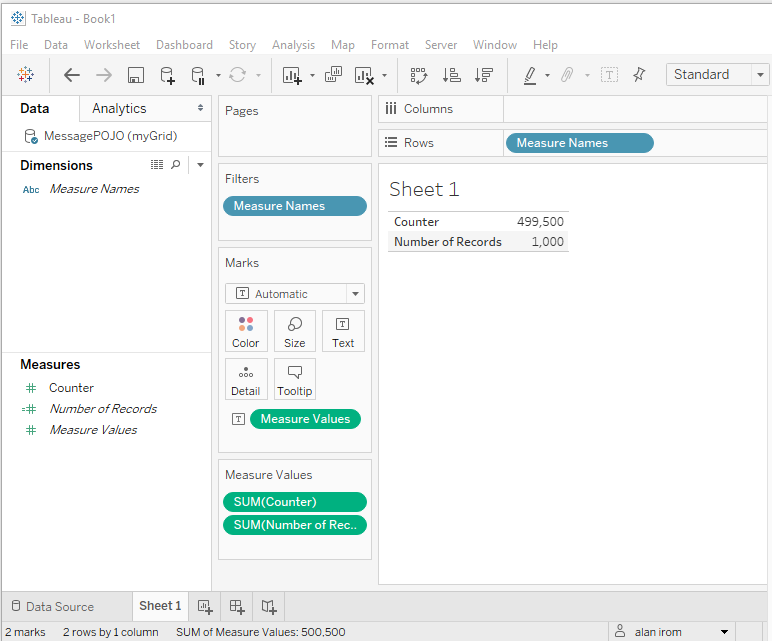
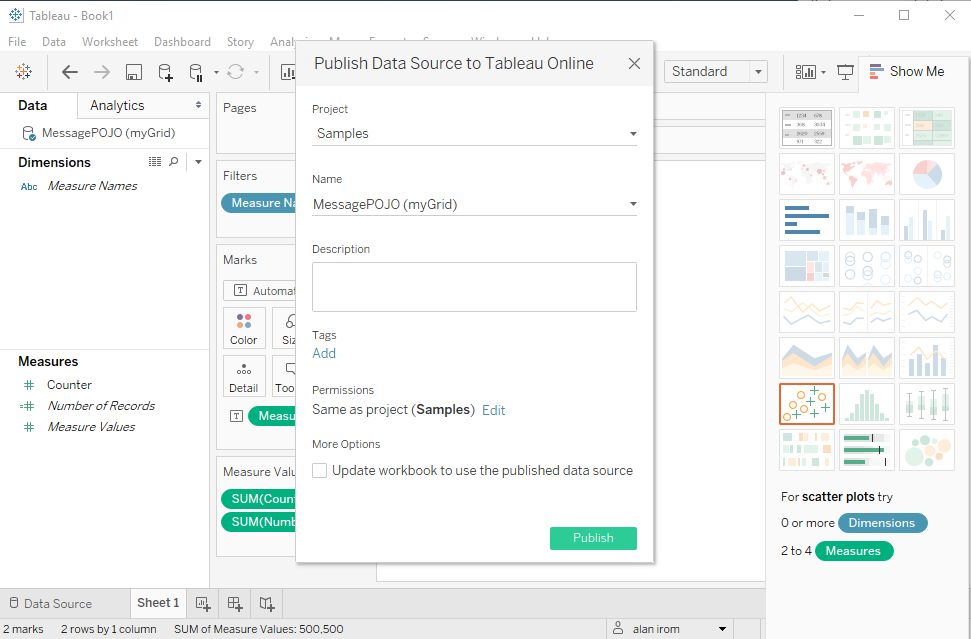

Integrating with Tableau Server
This topic describes how to publish dashboards from to Tableau Server, where they can be shared throughout the organization. To integrate with Tableau Server you must:
- Set up the JDBC Connector on Tableau Server
- Configure the security settings on the server to work with Tableau Server
After both of these steps have been completed, you can publish data from Tableau Desktop to Tableau Server.
Prerequisites
Before you integrate with Tableau Server, make sure that:
- The Tableau Desktop application is already integrated with the Integrating [%=General.ProductNameIE%] with Tableau.
- Tableau Server has Java 8 or higher installed.
Configuring on Tableau Server
Setting Up the JDBC Connector
To set up the JDBC Connector:
-
Copy the JDBC driver from the Tableau Desktop <TABLEAU_HOME>\Drivers\ folder to the same folder on Tableau Server.
-
Copy the \tools\tableau\insightedge-connector folder to any folder on the server.
-
To configure the JDBC connector, run the following commands:
tsm configuration set -frc -k native_api.connect_plugins_path
-v C:/<insightedge_connectors folder>
tsm pending-changes apply
tsm configuration set -frc -k native_api.connect_plugins_path -v C:/<insightedge_connectors folder>
tsm configuration set -k JdbcDriverCustomLoad -v false --force-keys
tsm pending-changes apply
-
To verify (is this command required or only for verification) the configuration, run the following command:
tsm settings export --output-config-file config.txt
-
Verify that the config.txt file contains the following line:
native_api.connect_plugins_path -v C:/tableau_connectors
Configuring the Security
To configure the security for Tableau Server access:
-
Add the following to the setenv-overrides.bat/.sh file:
.export XAP_OPTIONS_EXT="-Dcom.gs.security.enabled=true -Dcom.gs.manager.rest.ssl.enabled=false"
set GS_OPTIONS_EXT="-Dcom.gs.security.enabled=true -Dcom.gs.manager.rest.ssl.enabled=false"
- Create an new user with all permissions. This is the user that will connect to Tableau Server.
Publishing Data to Tableau Server
After the setup process is complete and the connection has been configured, you can publish dashboards that are created in Tableau Desktop using data to Tableau Server.
To publish a dashboard with data from Tableau Desktop to Tableau Server:
-
Connect to the Space (this is configuring the data source) in Tableau Desktop.

-
In Tableau Desktop, do the following:
-
Create a sheet that uses data.

-
Select Sign In from the Server menu.
-
Select Publish Data Source from the Server menu.
-
Select the required options in the Publish Data Source window and click Publish.

The data source is published to Tableau Server and the Tableau Server URL opens in your browser.
- Log in to Tableau Server and verify that the data was published.